Performance comparison of MANET routing protocols
Mobile Ad Hoc Network (MANET) is an autonomous temporary network, where routing is done using nodes that establishes the network. MANET works without any infrastructure and depends on energy. There are different MANET routing protocols under three broad categories, reactive, proactive, and hybrid routing protocols [6]. Each of the routing protocols has its own advantages and disadvantages and the performance can vary based on different metrics. This project compares and analyses, the performance of four MANET protocols, optimization of the link state routing algorithm (OLSR), destination sequenced distance vector (DSDV), ad hoc on-demand distance vector (AODV), and dynamic source routing (DSR). The comparison has been made based on five performance metrics, flow bit rate (bit per second), number of lost packets, delay in seconds, receive rate, and number of flows for 50 nodes and 100 nodes. It was observed that DSR generated the best performance results and DSDV had the least performance results if we consider receiving rate as the only performance metric.
Mobile Ad Hoc Network (MANET) moves packets without any central administration. Mobile means moving geographically and ad hoc means impermanent without any fixed infrastructure. The topology of the MANET network keeps changing due to the dynamic nature of the network. Thus, in this varying environment, it is difficult for any routing protocol to work optimally.
Following 4 protocols have been used for our project.
The routes between nodes are established in 2 steps: route discovery and route maintenance.
‘RREQ’, ‘RREP’, ‘RRER’ messages are exchanged here.
Here, transmitted packets have the complete address.
This is also carried out in 2 steps like AODV.
Here source node first looks for the route in the cache before exchanging messages.
It is an optimization of link state routing algorithm.
It reduces number of retransmission for broadcasting with the uses of Multi Point Relays (MPRs).
OLSR utilizes HELLO and Topology Control (TC) messages.
It is a table driven routing protocol, which works on the Bellman Ford routing algorithm.
Measuring the flow bit rate, packet loss, receive rate, delay, and number of flows will help to choose the appropriate MANET protocol for its intended applications. Based on these simulation parameters, the outcome is visualized, and the conclusion is drawn about the best-performed and least optimal MANET routing protocol. All the metrics are measured for 50 nodes first. Then the steps are repeated for 100 nodes. The same procedure has been executed twice in order to see if increasing the number of nodes makes any difference in the performance of the network. The project costs $0 as it is done using an ns-3 network simulator and Python. The entire work is done within the given time frame. The purpose of this project is to compare the performance of four MANET routing protocols considering the above-mentioned metrics.
Four routing protocols were simulated using NS3
NS3 version: 3.31
Operating system: Ubuntu 22.04
Receiving rate
Number of flows
Packet loss
Flow Bit Rates (bit/second)
Delay in seconds
Following images are the screenshots of simulation outcomes generated from the mentioned four MANET routing protocols at different times for limited nodes. We have repeated this simulation process for 50 nodes and 100 nodes. In this simulation process, the source nodes will communicate with their neighboring nodes to find the destination and forward the packets.
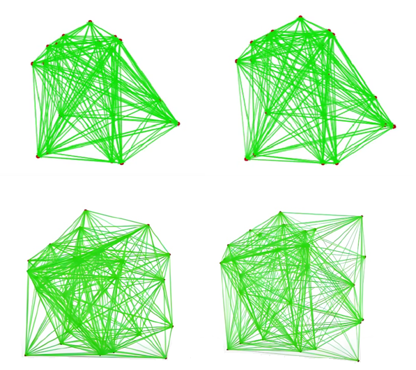
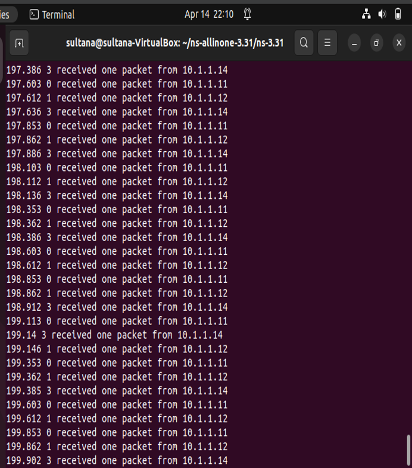
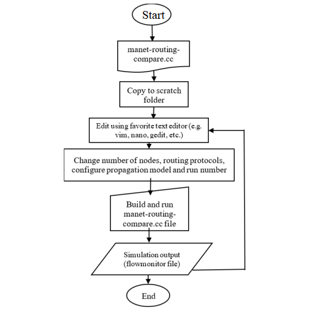
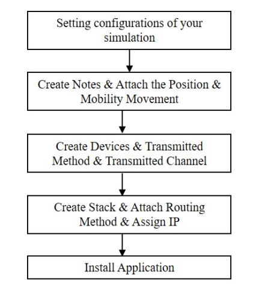
For the generation of our simulation scenario, we divided the entire simulation into two parts. The first part consisted of the simulation file. The simulation file lays out the overall architecture of the simulation. It contains details about node frequencies, nodal class, node data, importing/exporting data to other simulations, integration, etc. The second part consisted of the tracing file. A tracing file is a file that contains event logs during a simulation process.
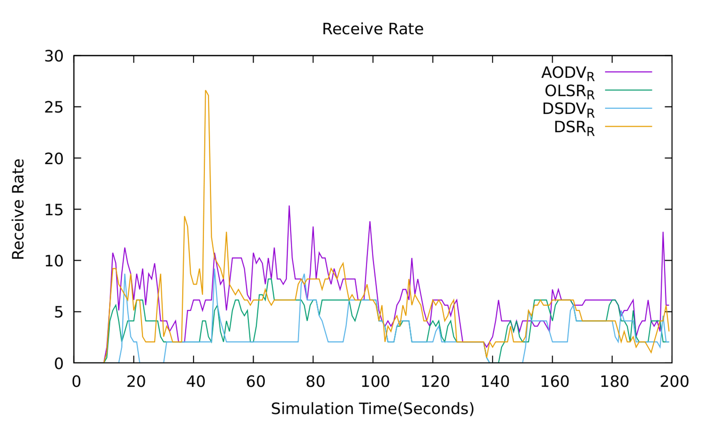
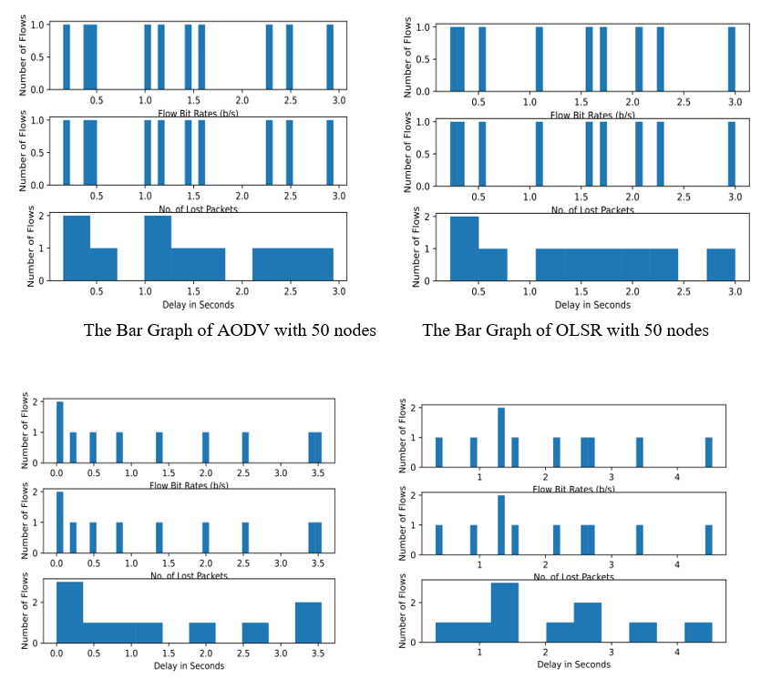
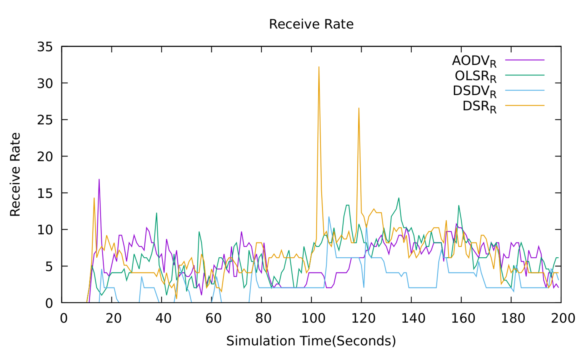
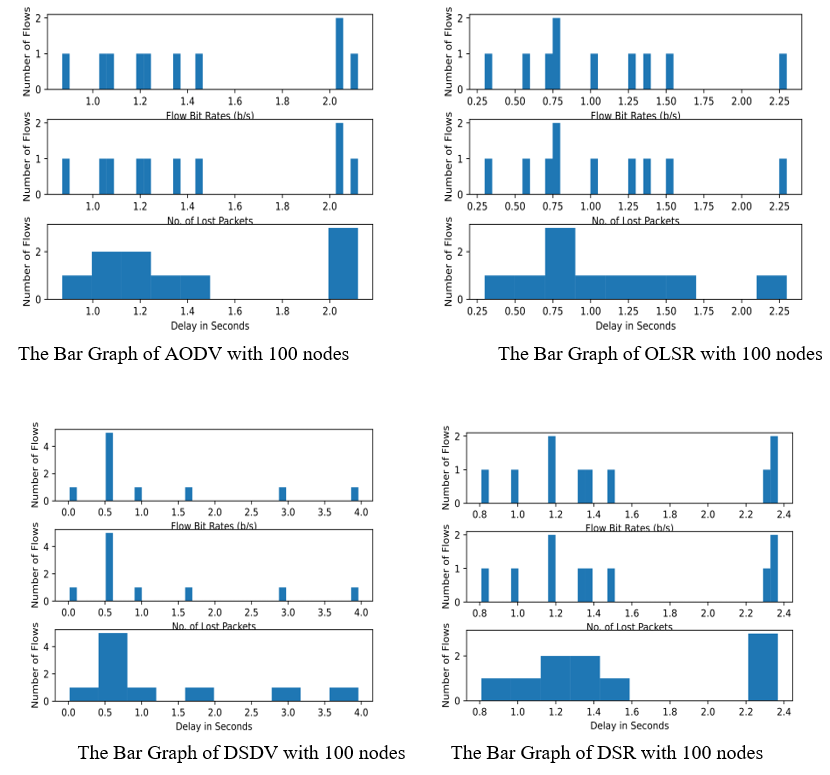
for 50 nodes
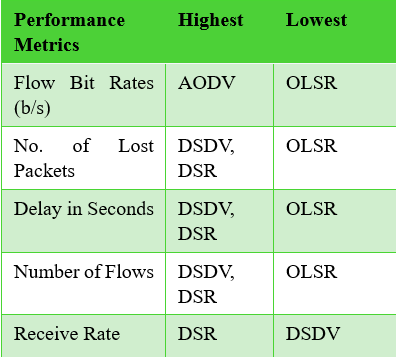for 100 nodes
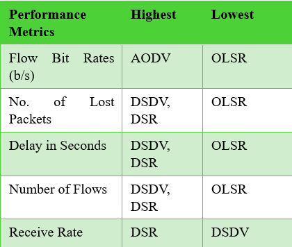Under some circumstances (with higher nodes), the protocols took a significant amount of time to generate any packet. In our case, the DSR routing protocol took a longer time to build and run the simulation compared to the other protocols. Also, due to the highly dynamic nature of mobile ad hoc networks, there were frequent and unpredictable changes in our network topology while doing the simulation, which made routing among the mobile nodes a complex and difficult task.
In our project, we faced two challenges that we later solved through deep analysis. At first, when running the experiment, we could not generate any trace of flows in DSR. Later, we figured out that the problem occurred because the routing message overhead was very low. We fixed that by increasing the transmission power of the nodes. A higher transmission power can extend the communication range of nodes, leading to more frequent interactions and faster routing updates, resulting in earlier simulation of routing behavior. In addition, we implemented the DSR namespace. That’s because the DSR protocol requires a separate namespace to be addressed inside the code for the flow monitor to be able to trace any flow
The other difficulty that we encountered was that in the beginning, the simulation started at 100 seconds (the delay was 100 seconds). A delay of 100 seconds was too much. We fixed that by increasing the mobility speed of the nodes. Higher mobility speeds can result in more frequent changes in network topology, leading to faster convergence of routing protocols and earlier simulation of node movements and routing behavior.
We compared the protocols using UDP packets. An alternative approach can be using Ping and TCP traffic both together and separately.
Future work will include adding and varying other performance metrics to see the performance differences among the manet four routing protocols. We can also take into consideration the energy consumption of the nodes as another performance metric. Future work will also include a similar analysis of other MANET routing protocols in hopes of improving the respective metrics. More extensive ranges of scenarios are vital to understanding and testing the effects of changes to objective functions. For instance, we can bring into consideration the other manet routing protocols like ABR, FSR, TORA, etc.
Flow monitor does not capture any flows using DSR, but we can use other performance matrices to come to a solution.
1. A. Mishra, S. Singh and A.K. Tripathi, “Comparison of Manet Routing Protocols,” International Journal of Computer Science and Mobile Computing, vol. 8, no. 2, pp. 67–74, Feb. 2019. Retrieved from https://www.ijcsmc.com/
2. S. Vemuri and S. Mirkar, "A Performance Comparison of MANET Routing Protocols," 2021 Innovations in Power and Advanced Computing Technologies (i-PACT), Kuala Lumpur, Malaysia, 2021, pp. 1-5, doi: 10.1109/i-PACT52855.2021.9696785.
3. Kaur and P. Thakur, "Routing Protocols in MANET: An Overview," 2019 2nd International Conference on Intelligent Computing, Instrumentation and Control Technologies (ICICICT), Kannur, India, 2019, pp. 935-941, doi: 10.1109/ICICICT46008.2019.8993294.
4. Sapna, K. Deshpande and K. Ravi, "Study On Routing Protocols For MANETs," 2018 International Conference on Computational Techniques, Electronics and Mechanical Systems (CTEMS), Belgaum, India, 2018, pp. 322-325, doi: 10.1109/CTEMS.2018.8769137.
5. N. Alslaim, H. A. Alaqel and S. S. Zaghloul, "A comparative study of MANET routing protocols," The Third International Conference on e-Technologies and Networks for Development (ICeND2014), Beirut, Lebanon, 2014, pp. 178-182, doi: 10.1109/ICeND.2014.6991375.
6. A. Ashraf and M. Kaur, "Comparison Parameters of MANET Routing Protocols," 2021 9th International Conference on Reliability, Infocom Technologies and Optimization (Trends and Future Directions) (ICRITO), Noida, India, 2021, pp. 1-6, doi: 10.1109/ICRITO51393.2021.9596212.
7. S. Singla and S. Jain, "Comparison of routing protocols of MANET in real world scenario using NS3," 2014 International Conference on Control, Instrumentation, Communication and Computational Technologies (ICCICCT), Kanyakumari, India, 2014, pp. 543-549, doi: 10.1109/ICCICCT.2014.6993021.
8. C. Samara, E. Karapistoli and A. A. Economides, "Performance comparison of MANET routing protocols based on real-life scenarios," 2012 IV International Congress on Ultra Modern Telecommunications and Control Systems, St. Petersburg, Russia, 2012, pp. 870-877, doi: 10.1109/ICUMT.2012.6459784.
9. I. A. Alameri and J. Komarkova, "A Multi-Parameter Comparative Study of MANET Routing Protocols," 2020 15th Iberian Conference on Information Systems and Technologies (CISTI), Seville, Spain, 2020, pp. 1-6, doi: 10.23919/CISTI49556.2020.9141119.
10. B. -N. Cheng and S. Moore, "A comparison of MANET routing protocols on airborne tactical networks," MILCOM 2012 - 2012 IEEE Military Communications Conference, Orlando, FL, USA, 2012, pp. 1-6, doi: 10.1109/MILCOM.2012.6415798.
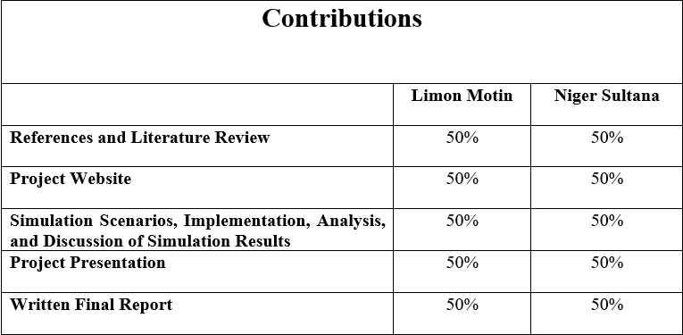